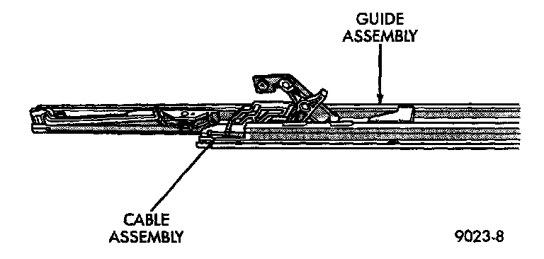

Sunroof / Moonroof: Service and Repair
GUIDE ASSEMBLYREMOVAL
1. Remove wind deflector, mechanism covers, glass panel, drain channel, sunshade and drive cable locator as necessary.
2. Move glass carriage to vent position.
3. Remove front slide from guide assembly.
4. Remove screws holding front and center guide track to unit.
5. Pull cable out of groove for cable end.

6. Pull guide outward to release from housing. Separate rear end of guide from clips. Slide guide out of unit.
INSTALLATION
1. Install guide cable into rear of guide assembly.
2. Install guide assembly at an angle so the rear portion slips under finger clips at rear of module housing.
3. Place cable in groove of cable holder.
4. Install screws in track assembly.
5. Install wind deflector, mechanism covers, glass panel, drain channel, sunshade and drive cable locator as necessary.